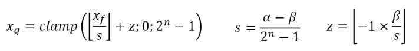
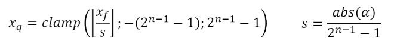

Deep learning has a growing history of successes, but heavy algorithms running on large graphical processing units are far from ideal. A relatively new family of deep learning methods called quantized neural networks have appeared in answer to this discrepancy.
How it works
Normally, higher-precision weights and activations are used in deep learning models, but quantized neural networks use lower-precision weights and activations. This reduces the memory and computation requirements of the model, making it faster and more efficient. Usually, floating point numbers are converted to integers, but there are many ways to quantize a neural network.
Asymmetric quantization
In asymmetric quantization, a range of floating point numbers [A, B] is mapped to a range of integers [0, 2^N - 1]. The range of integers is determined by the number of bits N used to represent the integer. The range of floating point numbers is determined by the minimum and maximum values of the floating point numbers in the layer.

Asymmetric Quantization
Symmetric quantization
In symmetric quantization, a range of floating point numbers [-A, A] is mapped to a range of integers [-2^(N-1), 2^(N-1) - 1]. The range of integers is determined by the number of bits N used to represent the integer. The range of floating point numbers is determined by the maximum absolute value of the floating point numbers in the layer.

Symmetric Quantization
Dequantization
We can dequantize the numbers to assess the accuracy of the quantized neural network. Dequantization is the process of converting the quantized numbers back to floating point numbers. The dequantization process is the inverse of the quantization process. Usually, this results in a loss of precision.
Uniform vs Non-uniform quantization
So far, we have only discussed uniform quantization, where the range of floating point numbers is divided uniformly into the range of integers. However, non-uniform quantization is also possible, where the range of floating point numbers is divided non-uniformly into the range of integers. We will not discuss non-uniform quantization in this article.
Code
Create a simple tensor with random items
Code
import numpy as np# Suppress scientific notationnp.set_printoptions(suppress=True)# Generate randomly distributed parametersparams = np.random.uniform(low=-50, high=150, size=20)# Make sure important values are at the beginning for better debuggingparams[0] = params.max() +1params[1] = params.min() -1params[2] =0# Round each number to the second decimal placeparams = np.round(params, 2)# Print the parametersprint(params)